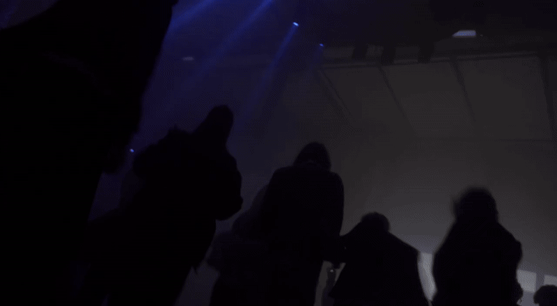
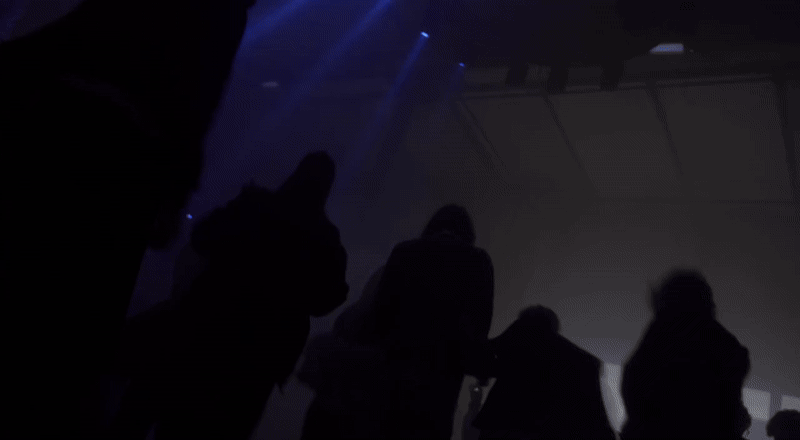
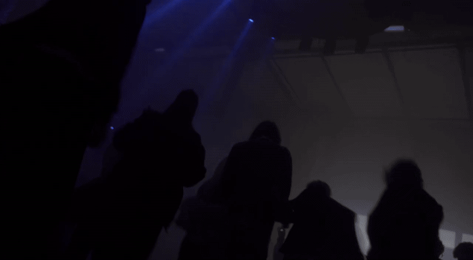
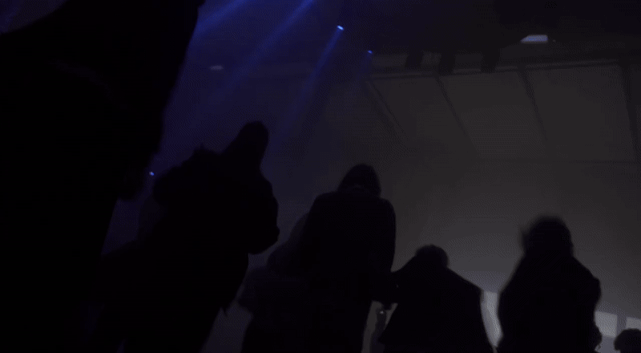

 

Lighting programming, design, and live operation using GrandMA2 during the Drowned God event at Musikbrauerei, Berlin, organized by Fetchish, EWASTE, ASID, and Tear City. Executed real-time lighting control across multiple live performances, integrating scenographic and audiovisual elements within the industrial architecture of the venue.